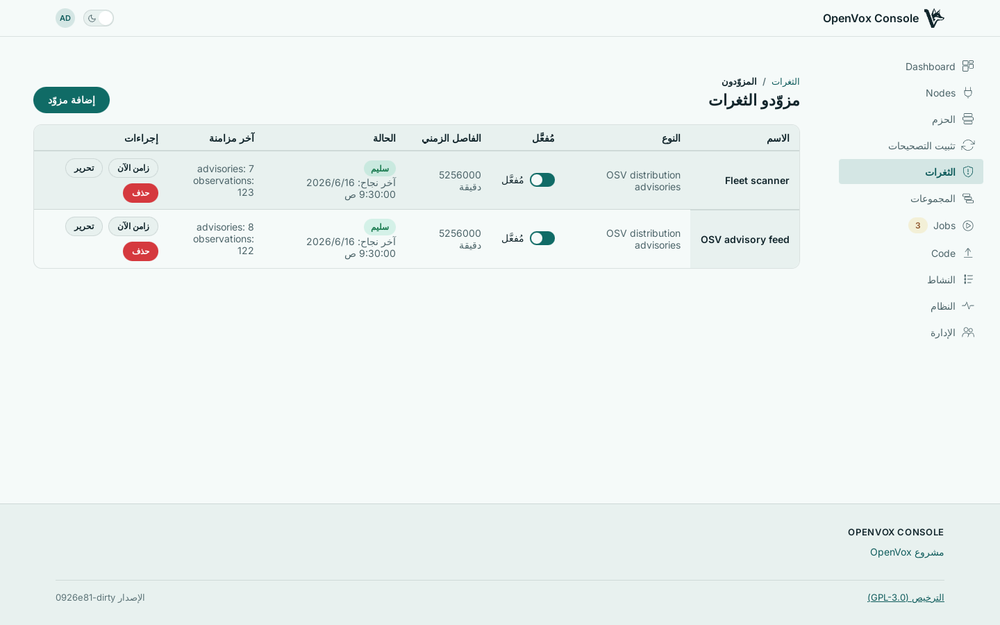

الاستخدام
تتبّع الثغرات
أعِدّ مزوّدي الثغرات، واقرأ الاكتشافات الخاصة بالأسطول، واعرف ما يستطيع كل مزوّد رؤيته وما لا يستطيع.
تُبلّغ وحدة التحكم عن الـ Nodes المتأثرة بكل ثغرة معروفة، مدمجةً من مزوّد واحد أو أكثر. وتطابق بيانات كل مزوّد مع الحزم التي يبلّغ عنها كل Node، لذا تحتاج الـ Nodes إلى تشغيل الإبلاغ عن الحزم: راجع إضافة Nodes.
تتطلب رؤية الاكتشافات vulnerabilities:read؛ وتتطلب تهيئة المزوّدين vulnerabilities:manage. ولا يتضمن nodes:read أيًّا منهما: فالاكتشافات أكثر حساسية من الجرد.
اختر مزوّدًا
| المزوّد | البيانات من | بيانات الاعتماد |
|---|---|---|
| OSV | قاعدة بيانات OSV العامة، أو نسختك المرآة الخاصة منها | لا شيء |
| Tenable | مستأجر Tenable الخاص بك | مفاتيح API |
يمكن تشغيل أي عدد من المزوّدين في الوقت نفسه، بما في ذلك مزوّدا OSV بموقعَي بيانات مختلفين. والثغرة التي يبلّغ عنها أكثر من مزوّد تظهر مرة واحدة، مع ذكر درجة الخطورة والإصدار المُصلَح لدى كل مزوّد.
لا يغادر وحدة التحكم أي شيء حتى تفعّل مزوّدًا.
استعد لبيانات الاعتماد
يحتاج المزوّد ذو بيانات الاعتماد إلى مفتاح يُشفّرها به في قاعدة البيانات. ولّد مفتاحًا، وحدّده في CONSOLE_SECRETS_KEY_FILE:
openssl rand -base64 32 > secrets.key
chmod 600 secrets.key
من دونه، يعمل OSV، ويُرفض المزوّد الذي يحتاج إلى بيانات اعتماد مع خطأ يذكر اسم الإعداد.
احفظ نسخة احتياطية من المفتاح مع النسخ الاحتياطية لقاعدة البيانات، لكن خزّنه بمعزل عنها. فقدانه لا يُفقدك أي اكتشافات، لكن كل بيانات اعتماد مخزَّنة تصبح غير قابلة للقراءة، وتفشل تلك المزوّدات حتى تُدخل بيانات اعتمادها مجددًا تحت مفتاح جديد.
أضف مزوّدًا
- افتح الثغرات، ثم المزوّدون.
- أضف مزوّدًا من النوع الذي تريده، واملأ إعداداته وأي بيانات اعتماد. لا تعرض وحدة التحكم بيانات اعتماد مخزَّنة مرة أخرى أبدًا؛ اترك حقل بيانات الاعتماد فارغًا عند التحرير للإبقاء على المخزَّنة.
- فعّله.


يُزامن فورًا ثم وفق جدول، كل ساعة افتراضيًا بالنسبة إلى OSV. تتحدّث الاكتشافات حين يُزامن المزوّد، لا عند كل تشغيل لـ Puppet.
ما الذي ينزّله OSV
لا ينزّل OSV البيانات إلا للتوزيعات التي يشغّلها أسطولك، عبر HTTPS من storage.googleapis.com افتراضيًا. تنزّل المزامنة الأولى لتوزيعة ما أرشيفها كاملًا - نحو 70 MB لـ Debian و700 MB لـ Ubuntu - ولا تُزامن اللاحقة إلا ما تغيّر.
المواقع المعزولة عن الشبكة
وجّه موقع البيانات لمزوّد OSV إلى نسخة مرآة داخلية من حاوية OSV، منظَّمة بالطريقة نفسها لكل توزيعة: ملف all.zip الخاص بها، وملف modified_id.csv الخاص بها، وملف JSON لكل سجل متغيّر. يكفي خادم ويب ثابت بسيط، ويكفي نسخ مجلد كل توزيعة لملئه:
gsutil -m rsync -r gs://osv-vulnerabilities/Debian ./Debian
تحتوي أسماء المجلدات على مسافات، مثل Rocky Linux وRed Hat.
Tenable
يستورد مزوّد Tenable كل اكتشاف مفتوح، ثم التغييرات فقط. يُطابَق كل أصل في Tenable مع Node بمقارنة أسمائه بالـ certname لكل Node وبالـ FQDN الذي يبلّغ عنه. والأصل الذي لا يطابق أي Node، أو يطابق عدة Nodes، يُتخطّى ويُحتسب غير مطابق؛ والعدد المتزايد يعني عادة أن Tenable يرى أسماء مختلفة عن الـ certnames لديك.
اقرأ الاكتشافات
تسرد صفحة الثغرات الاكتشافات عبر الأسطول، الأشد خطورة أولًا، مع عدد الـ Nodes التي يمسّها كلٌّ منها. وتعرض افتراضيًا الاكتشافات التي يتوفر لها إصلاح، وهي ما سيغيّره الترقيع؛ اضبط الإصلاح على الكل لتضمين ما لم يصدر له إصلاح.
الـ Node الذي لم يتمكن أي مزوّد مُفعَّل من تقييمه يُعرض على أنه غير مُقيَّم، مع سبب كل مزوّد، ولا يُعرض سليمًا أبدًا:
| السبب | المعنى |
|---|---|
| نظام تشغيل غير مدعوم | يغطي OSV كلًّا من Debian وUbuntu وAlmaLinux وRocky Linux وRHEL من 7 إلى 10 |
| لا توجد بيانات حزم | لا يبلّغ الـ Node عن أي حزم؛ شغّل الإبلاغ له |
| يلزم ترقية الوكيل | بيانات حزم الـ Node أقدم من أن تُطابَق بشكل موثوق؛ وترقية وكيل الـ Node الخاص به تُصلح ذلك عند تشغيل Puppet التالي له |
| لم يرَه Tenable | لم يطابق أي أصل في Tenable الـ Node |
| لم تتم المزامنة بعد | لم يُنهِ المزوّد أي مزامنة بعد |
ما تتوقعه من OSV
- على Debian وUbuntu، لا تزال تظهر ثغرات كثيرة تصنّفها التوزيعة على أنها ضئيلة الأهمية، أو قررت عدم إصلاحها، على هيئة اكتشافات لم يصدر لها إصلاح. ولهذا تبدأ القائمة من «يتوفر إصلاح».
- تُطابَق Nodes الـ RHEL مع المستودعات الرئيسية فقط. وقد تُظهر الـ Nodes التي تستخدم مستودعات الدعم الممتد أو المستودعات الإضافية اكتشافات لا تنطبق عليها.
- لا تنشر AlmaLinux أي درجة خطورة، لذا تظهر اكتشافاتها بالقيمة غير معروف.
الاكتشافات المتعلقة بنوى قديمة وحزم أخرى أزلتها منذ زمن تأتي عادةً من حزم أُزيلت دون تطهير، ولا تزال ملفات إعدادها باقية. طهّرها على الـ Node باستخدام apt purge '~c'؛ وتُغلق الاكتشافات عند المزامنة التالية للمزوّد.